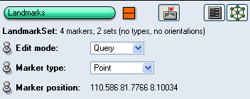

Description
This component allows you to edit landmark sets.
It operates by directly interacting with the 3D geometry in the viewer window,
cf. Section 3.1.8.
In order for this to work, the viewer must be
switched to interaction mode, e.g., by pressing ESC as described
in its documentation.

Figure 1:
User interface of the landmark editor.
The editor has different Edit modes, which are described in the
following:
- Add. In this mode new landmarks are added by clicking onto a piece of 3D
geometry (e.g., an Isosurface or an OrthoSlice). Multiple clicks are
required if the landmark set contains more than one point set.
- Move. Markers can be moved in this mode by first clicking on the
marker (selecting it) and then clicking to a new position.
- Transform. In this mode, markers can be moved using a dragger.
Click on one of the markers, then use the dragger to manipulate it.
- Flip. Flip geometry of marker. This only makes sense if the marker
type is not Point.
- Remove. The marker you click on will be removed. If more than one
point set is present, the marker will be removed from all sets.
- Query. After you click on a marker, its type and its xyz-position
are shown. The marker type can be changed via an option menu. The default
marker type is a Point, represented by a little sphere. In addition,
a number of predefined specialized marker types can be selected. In contrast
to point-type markers, specialized markers have fixed predefined sizes (world
coordinates assumed to be given in centimeters).
See also documentation for Landmark Set.
{kind=link}